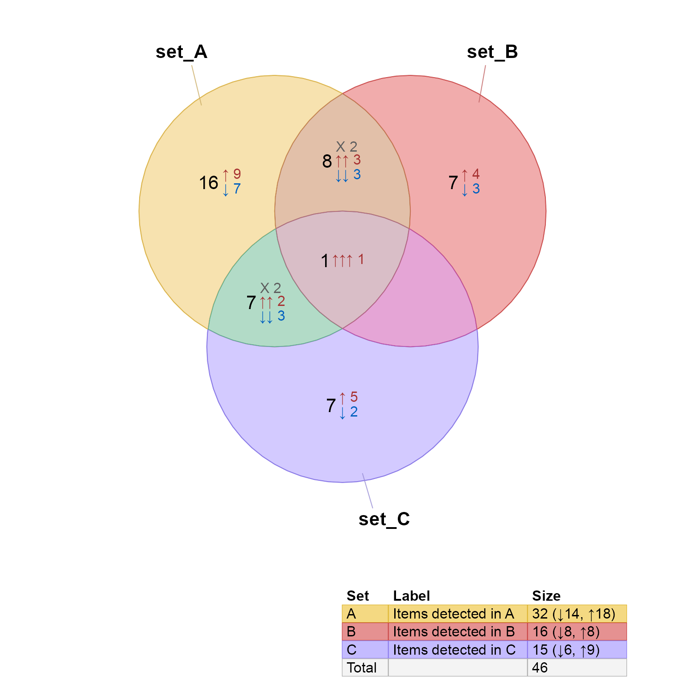
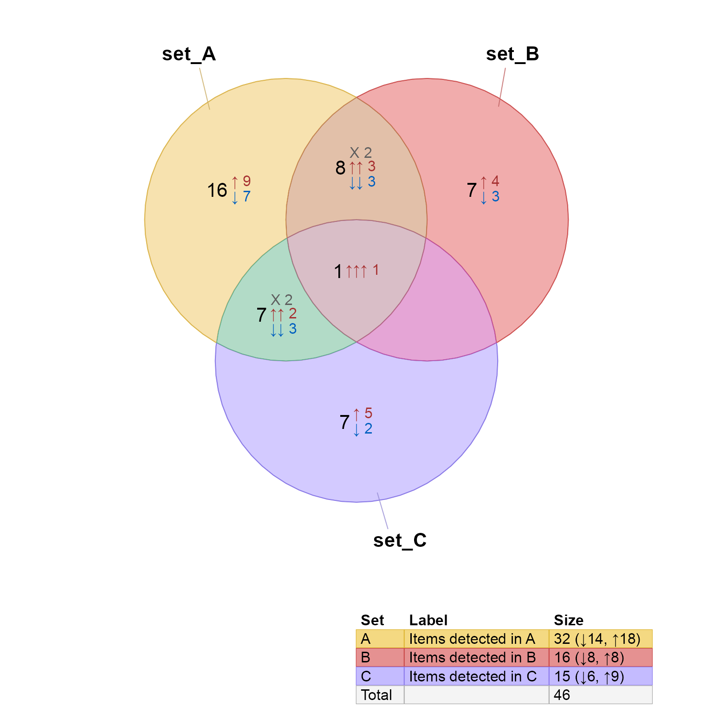
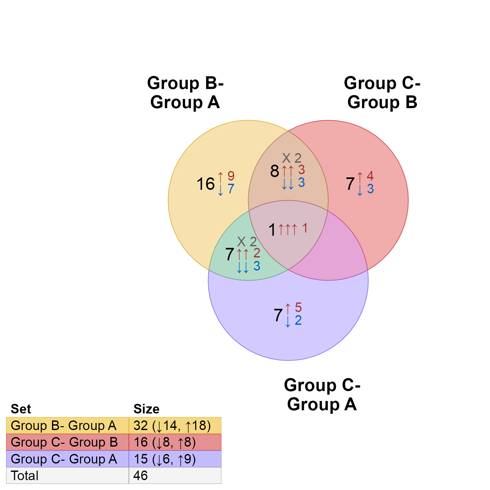
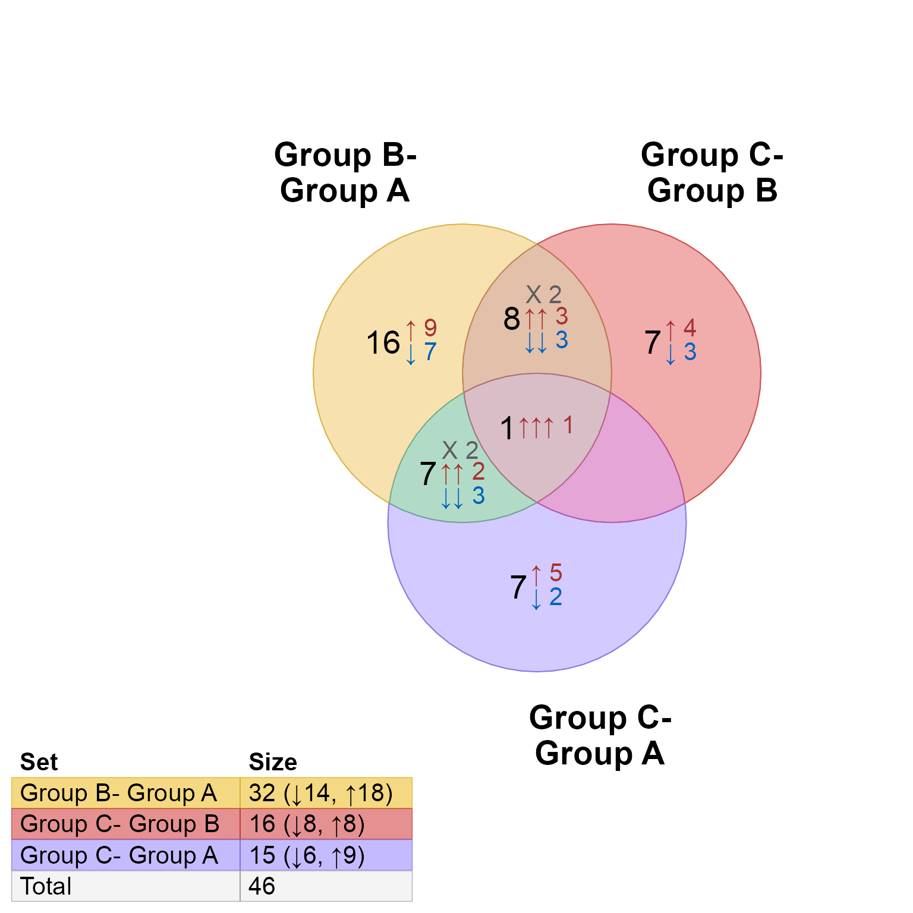
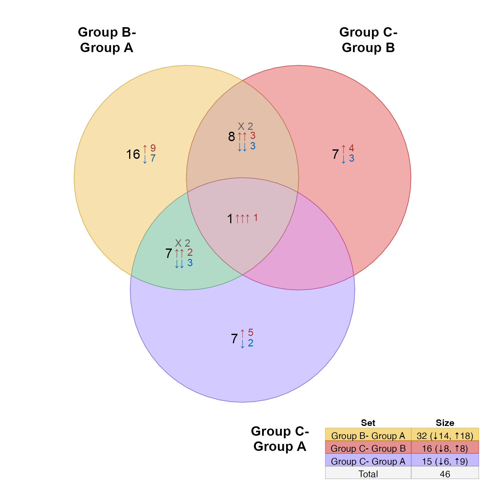
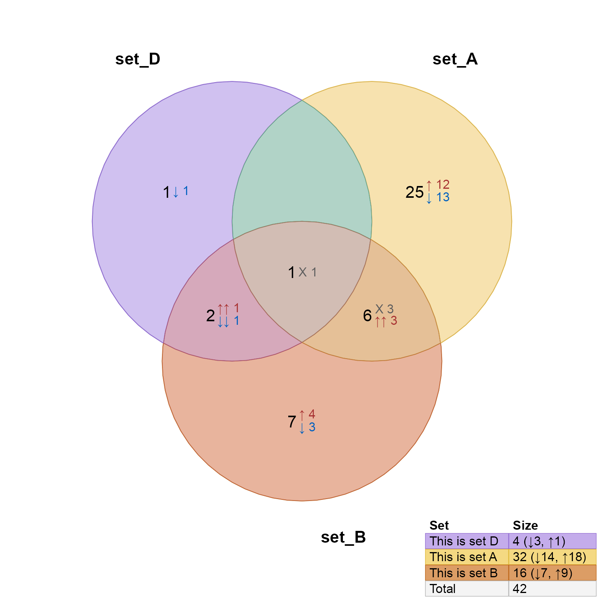
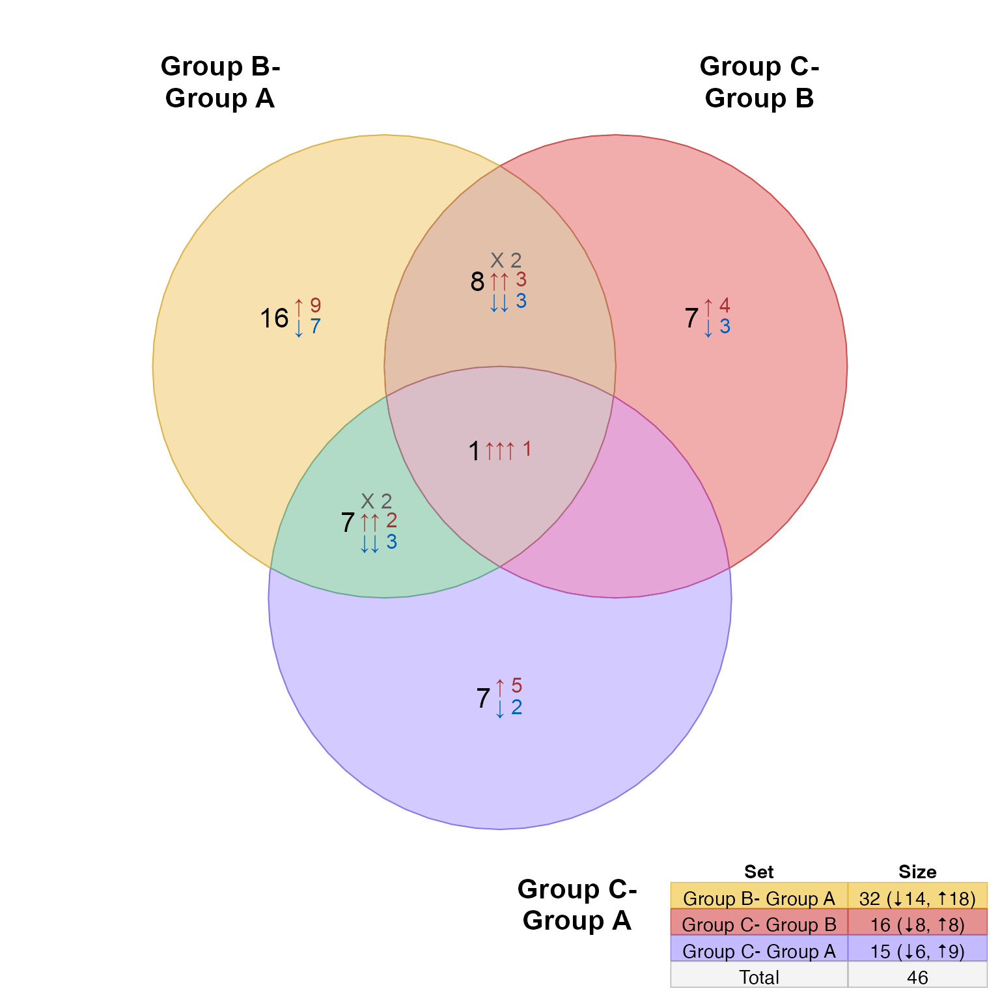
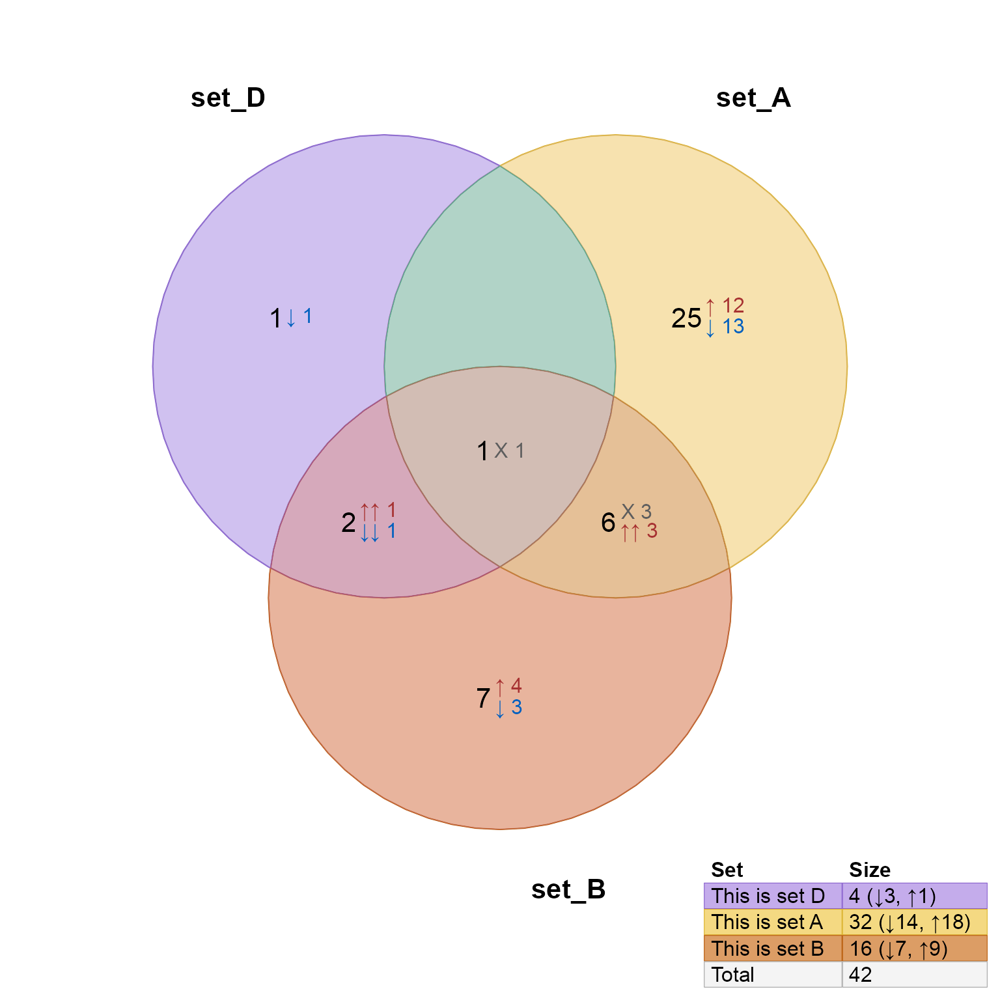

Add legend to venndir figure
Usage
venndir_legender(
venndir_output = NULL,
setlist = NULL,
x = "bottomleft",
set_colors = NULL,
legend_style = c("grid", "data.frame"),
unicode = TRUE,
legend_headers = c(Set = "Set", Size = "Size", Percentage = "Percentage", Sign =
"Sign"),
sign_count_delim = NULL,
keep_newlines = FALSE,
legend_total = TRUE,
legend_percentage = NULL,
legend_signed = NULL,
combine_signed = TRUE,
combine_size = TRUE,
legend_color_style = c("fill", "border"),
box.lwd = 0,
item_type = "",
header_color = "#000000",
header_bg = "#FFFFFF00",
header_border = "#FFFFFF00",
lwd = 1,
x_inset = grid::unit(2, "lines"),
y_inset = grid::unit(2, "lines"),
font_cex = 1,
fontfamily = "Arial",
fontfamilies = list(signed = fontfamily, count = fontfamily, overlap = fontfamily),
poly_alpha = 0.8,
table_theme = NULL,
draw_legend = TRUE,
alias = NULL,
labels = NULL,
legend_padding = 2,
set_suffix = "",
vp = NULL,
fg_fun = marquee_text_grob,
verbose = FALSE,
...
)Arguments
- venndir_output
Venndirobject, default NULL, or one of:Venndirobject, also used to defineset_colorswhen applicablelistrepresentingsetlistdata.frameoutput fromsigned_overlaps()
- setlist
list, default NULL, used whenvenndir_outputis NULLlistrepresentingsetlistdata.framewith output fromsigned_overlaps(), with columns"sets","overlap","count". It may include"each"which is required to display signed counts withlegend_signed=TRUE.
- x
characterstring indicating the position of the legend, as passed tographics::legend()whenlegend_style="base". Not relevant whenlegend_style="data.frame".- set_colors
characteroptional vector of R colors, whose names should matchnames(setlist). When not supplied, colors are inferred fromvenndir_output, and when that is not supplied, colors are defined usingcolorjam::rainbowJam().- legend_style
characterstring, default"grid"with the legend style, with these options:"grid"generates a gridgrobusinggridExtra::grid.table()."data.frame"generates the legenddata.frame.
- unicode
logicaldefault TRUE, whether to use unicode arrows for signed counts, used whenlegend_signed=TRUE. This argument is passed tocurate_venn_labels().- legend_headers
charactervector with headers to use, named by the default heading. To display no column header, setlegend_headers=NULLorlegend_headers=FALSE. Recognized names:"Set" - the header for the set names, default "Set".
"Label" - when
labelsorlegend_labelsare defined, the header "Label" can be customized."Size" - the header for the set sizes, default "Size".
"Sign" - the header for the set signs, default "Sign".
"Percentage" - the header for the set size percentage overall, default "Percentage".
- keep_newlines
logicalindicating whether to keep newlines (line breaks) in the set labels used in the Venn legend.- legend_total
logicaldefault TRUE, whether to include the total unique items in the legend. WhenFALSEit also setslegend_percentage=FALSE.- legend_percentage
logicaldefault NULL, whether to include the percentage of total items represented in each set. This option is only used whenlegend_total=TRUE.When set to
NULLit will display percentage only when present as a text label, as whenshow_labelsinclude"p"or"P".
- legend_signed
logicaldefault FALSE, whether to include signed counts in the legend.When set to
NULLit displays signed counts only when available, which requires:overlap_typeis not "overlap", andlegend_dfcolumn "type" has entries with "sign".
- combine_signed
logicaldefault TRUE, whether to combine multiple signed counts into one column (TRUE), or keep separate columns (FALSE). Somewhat experimental. This option is only used when signed counts are included.- combine_size
logicaldefault TRUE, whether to combine counts in the "Size" column with signed counts. WhenTRUE, this option also left-aligns the "Size" column.- legend_color_style
characterstring to customize how colors are used,c("fill", "border")are default:"fill": will use the Venn fill color"border": will use the Venn border color"nofill": will remove the Venn fill color"noborder": will remove the Venn border color"greyfill": will use"F4F4f4"grey fill color, matching the Total."greyborder": will use"#999999"border color, matching the Total."blackborder": will use"#000000"border color, matching the Total.
- box.lwd
numericused to define the box line width, as passed tographics::legend()whenlegend_style="base".- item_type
characterstring used as a suffix to the counts displayed in the legend. Useitem_type=""oritem_type=NULLto hide this suffix.- header_color, header_bg, header_border
characterR colors to define colors for particular elements:header_colordefines the text color of the column headers. To hide the column header, currently useheader_color="white", matching whatever color is used forheader_bg.header_bgdefines the background fill color for the column headers.header_borderdefines the border color for the header, which is also applied to all cells in the table. Note that the line is drawn with line widthlwd.
- lwd
numeric, default 1, cell border line width used in the legend table, whenlegend_style="grid".- x_inset, y_inset
grid::unit, default 2 lines each, used whenlegend_style="grid"to position the legend relative tox, useful when positioning the legend near the edgex="bottomleft". The inset controls distance from the plot edge, along the x- and y-axes, respectively. For examplex_inset=grid::unit(2, "lines")will place the legend table 2 character lines (which are defined by line height for typical character size) away from the left or right edge of the plot. Any validgrid::unitcan be used. Note that the metric is "plot edge", and the plot is fixed 1:1 aspect, so for wide plot devices a negativex_insetmay be used to nudge the legend outside the typical plot boundary.- font_cex
numericadjustment to default font sizes. The default font size withlegend_style="grid"uses a 12 point font, so to adjust to a specific font size like 8 points, use:font_cex=8/12- fontfamily
characterused as the default font for all labels, and is used infontfamiliesby default. Howeverfontfamiliestakes priority when defined.- fontfamilies
listwith named elements to allow a custom font for each element of the legend, consistent with usage byassemble_venndir_label()."overlap": used for set labels and column headers, and column headers are currently always bold font."count": used for main counts in "Size", and percentage in "Percentage" when displayed."signed": used for signed counts, when shown and whencombine_size=FALSE, otherwise the signed labels are combined with count labels and they re-use the same font as"count"above.
- table_theme
listdefault NULL, optional theme as described ingridExtra::tableGrob(), andgridExtra::ttheme_default(). When supplied, thefont_cexargument is ignored. Thelistcomponents include:base_size- default font sizebase_colour- default font colorbase_family- default font familyparse-logicalwhether to parse plotmath expressionspadding-grid::unit()for horizontal and vertical padding within each cell
- draw_legend
logical, default TRUE, whether to draw the resulting legend. WhenFALSEthe data is returned based uponlegend_style, whenlegend_style="grid"it returns a gridgrob, otherwise it returnsdata.frame.- alias
character, default NULL, optional set aliases, intended to add a new first column to the legend with these aliases. Useful to display a short label in the legend table, while also supplying a longer label vianames(setlist)orlabels. This argument differs fromlabelsin thatlabelsreplaces thenames(setlist)in the legend table withlabels. However,aliasadds a new column to the table as column 1.- labels
characterdefault NULL, optional custom labels to display in place ofnames(setlist)in the legend table. Note:names(labels)must also matchnames(setlist). This argument differs fromlabelsin thatlabelsreplaces thenames(setlist)in the legend table withlabels. However,aliasadds a new column to the table as column 1.- legend_padding
numericorgrid::unit, default 5, padding for each table cell. This value is also adjusted byfont_cex. This value is only used whentable_themeis not provided.- set_suffix
characterstring (default"") used as optional suffix, and previously used":"but was changed to"".- verbose
logicalindicating whether to print verbose output.- ...
additional arguments are passed to internal functions. Notably
curate_venn_labels()may accept thecurate_dfargument, to allow custom labeling.
Value
data.frame with legend information is returned invisibly,
unless using legend_style="grid", draw_legend=FALSE in which case the
legend grob object is returned which can then be manipulated
before rendering.
Details
Note this function is experimental and is under active development. The implementation and arguments may change in future.
Limitations: Currently this function relies upon having the setlist
used to produce the venndir() output, and the venndir() output.
In future, the setlist could be derived from the venndir() output
object directly. That step likely needs a new function.
When using arguments legend_style="grid" and draw_legend=FALSE the
grid grob object is returned, so that it can be manipulated
as needed before rendering. Note that in this case, the viewport
will have already been defined and stored into legend_grob$vp
with x position legend_grob$vp$x and y position legend_grob$vp$y.
Total legend width is: sum(legend_grob$widths), and
total legend height is: sum(legend_grob$heights).
Todo:
Consider bottom-justifying text in each cell, left-justifying text labels, and right-justifying numeric values.
See also
Other venndir utility:
curate_venn_labels(),
expand_range(),
make_color_contrast(),
make_venn_combn_df(),
make_venn_test(),
match_list(),
modify_venndir_overlap(),
nudge_venndir_label(),
plot,Venndir,ANY-method,
print_color_df(),
shrink_df(),
three_point_angle(),
venndir_to_df()
Examples
setlist <- make_venn_test(100, 3, do_signed=TRUE);
# by default the legend is shown
vo <- venndir(setlist)
 # move to different corner
vo <- venndir(setlist, legend_x="bottomleft")
# move to different corner
vo <- venndir(setlist, legend_x="bottomleft")
 # add alias column
vo <- venndir(setlist,
legend_labels=setNames(paste0("Items detected in ", LETTERS[1:3]),
names(setlist)),
alias=setNames(LETTERS[1:3], names(setlist)))

# turn off the default legend
vo <- venndir(setlist, draw_legend=FALSE)
venndir_legender(setlist=setlist,
venndir_output=vo,
x="bottomleft")
# add alias column
vo <- venndir(setlist,
legend_labels=setNames(paste0("Items detected in ", LETTERS[1:3]),
names(setlist)),
alias=setNames(LETTERS[1:3], names(setlist)))

# turn off the default legend
vo <- venndir(setlist, draw_legend=FALSE)
venndir_legender(setlist=setlist,
venndir_output=vo,
x="bottomleft")
 # test multi-line labels
names(setlist) <- c("Group B-<br>Group A",
"Group C-<br>\nGroup B",
"Group C-<br>\nGroup A")
vo <- venndir(setlist,
draw_legend=FALSE,
font_cex=1.3,
fontfamily="Arial",
expand_fraction=c(-0.1, 0.4, -0.1, 0.1),
show_segments=FALSE)
venndir_legender(setlist=setlist,
venndir_output=vo,
font_cex=1.3,
x="bottomleft")

# some common customizations
vo <- venndir(setlist,
draw_legend=FALSE,
expand_fraction=c(0.2, 0.2, 0.2, 0.2)*3,
font_cex=0.7,
fontfamily="Arial")
venndir_legender(vo,
legend_headers=c(Set="Comparison",
Size="Counts (Signed Counts)"),
legend_color_style=c("nofill", "blackborder"),
font_cex=0.8,
x="bottomleft")
venndir_legender(vo,
combine_size=FALSE,
legend_headers=c(Set="Comparison",
Size="Counts", Sign="(Signed Counts)"),
legend_color_style=c("nofill", "blackborder"),
font_cex=0.8,
x="bottomright")
venndir_legender(vo,
combine_size=FALSE,
combine_sign=FALSE,
legend_headers=c(Set="Comparison",
Size="Counts", Sign="(Signed Counts)"),
legend_color_style=c("nofill", "blackborder"),
font_cex=0.8,
x="topright")
venndir_legender(vo,
legend_percent=TRUE,
legend_headers=c(Set="Comparison",
Percentage="Pct.",
Size="Counts", Sign="(Signed Counts)"),
legend_color_style=c("nofill", "blackborder"),
font_cex=0.8,
x="topleft")
# test multi-line labels
names(setlist) <- c("Group B-<br>Group A",
"Group C-<br>\nGroup B",
"Group C-<br>\nGroup A")
vo <- venndir(setlist,
draw_legend=FALSE,
font_cex=1.3,
fontfamily="Arial",
expand_fraction=c(-0.1, 0.4, -0.1, 0.1),
show_segments=FALSE)
venndir_legender(setlist=setlist,
venndir_output=vo,
font_cex=1.3,
x="bottomleft")

# some common customizations
vo <- venndir(setlist,
draw_legend=FALSE,
expand_fraction=c(0.2, 0.2, 0.2, 0.2)*3,
font_cex=0.7,
fontfamily="Arial")
venndir_legender(vo,
legend_headers=c(Set="Comparison",
Size="Counts (Signed Counts)"),
legend_color_style=c("nofill", "blackborder"),
font_cex=0.8,
x="bottomleft")
venndir_legender(vo,
combine_size=FALSE,
legend_headers=c(Set="Comparison",
Size="Counts", Sign="(Signed Counts)"),
legend_color_style=c("nofill", "blackborder"),
font_cex=0.8,
x="bottomright")
venndir_legender(vo,
combine_size=FALSE,
combine_sign=FALSE,
legend_headers=c(Set="Comparison",
Size="Counts", Sign="(Signed Counts)"),
legend_color_style=c("nofill", "blackborder"),
font_cex=0.8,
x="topright")
venndir_legender(vo,
legend_percent=TRUE,
legend_headers=c(Set="Comparison",
Percentage="Pct.",
Size="Counts", Sign="(Signed Counts)"),
legend_color_style=c("nofill", "blackborder"),
font_cex=0.8,
x="topleft")
 # Example showing how to render the legend_grob
# which may offer some flexibility.
vo <- venndir(setlist,
draw_legend=FALSE)
legend_grob <- venndir_legender(setlist=setlist,
venndir_output=vo,
draw_legend=FALSE,
header_color="white",
x="bottomleft")
grid::grid.draw(legend_grob)
# Example showing how to render the legend_grob
# which may offer some flexibility.
vo <- venndir(setlist,
draw_legend=FALSE)
legend_grob <- venndir_legender(setlist=setlist,
venndir_output=vo,
draw_legend=FALSE,
header_color="white",
x="bottomleft")
grid::grid.draw(legend_grob)
 # custom grid table theme
vo <- venndir(setlist,
show_segments=FALSE,
draw_legend=FALSE)
legend_grob <- venndir_legender(setlist=setlist,
venndir_output=vo,
headers=FALSE,
x="bottomright",
table_theme=gridExtra::ttheme_default(base_size=11,
base_family="sans",
padding=grid::unit(c(2, 2), "mm")))

# optional expanded labels, and subset setlist
setlist <- make_venn_test(100, 5, do_signed=TRUE);
vo <- venndir(setlist,
sets=c(4, 1, 2),
show_segments=FALSE,
draw_legend=FALSE)
venndir_legender(venndir_output=vo,
font_cex=1,
setlist=setlist,
labels=jamba::nameVector(
paste0("This is set ", LETTERS[1:5]),
names(setlist)))

# custom grid table theme
vo <- venndir(setlist,
show_segments=FALSE,
draw_legend=FALSE)
legend_grob <- venndir_legender(setlist=setlist,
venndir_output=vo,
headers=FALSE,
x="bottomright",
table_theme=gridExtra::ttheme_default(base_size=11,
base_family="sans",
padding=grid::unit(c(2, 2), "mm")))

# optional expanded labels, and subset setlist
setlist <- make_venn_test(100, 5, do_signed=TRUE);
vo <- venndir(setlist,
sets=c(4, 1, 2),
show_segments=FALSE,
draw_legend=FALSE)
venndir_legender(venndir_output=vo,
font_cex=1,
setlist=setlist,
labels=jamba::nameVector(
paste0("This is set ", LETTERS[1:5]),
names(setlist)))
